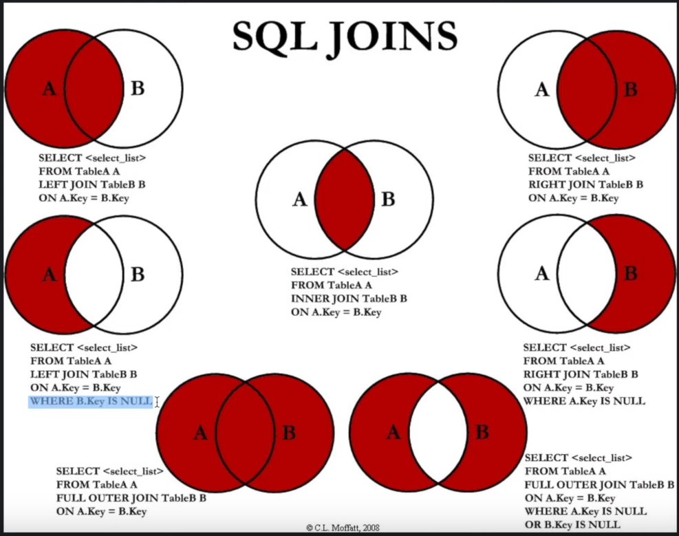

JOIN#
Join is a keyword that allows you to combine information from different tables. It’s really important, but sometimes it’s hard to understand, so this whole page is about features and usecases of joins in Postgres SQL.
In the following cell, I’m creating a database that will be used for all the examples on this page.
docker run -d --rm\
--name join_example_postgres\
-e POSTGRES_PASSWORD=postgres\
postgres:15.4 &> /dev/null
docker run -d --rm\
--name join_example_click\
clickhouse/clickhouse-server:24
sleep 5
1c7078e249c4d2fd392a6063c9bcf20334edd8589b457849f49756cf76540f54
Note Remember to close the container when you have finished playing with the examples.
docker stop join_example_postgres join_example_click
join_example_postgres
Join types#
This diagram describes the different types of joins available in SQL.

Find out more in the sepcific page.
Short names#
You can use short names for the tables involved in the join to make it easier to write code. Just give the new name of the table separated by a space from the original name of the table.
The following cell shows how tables table1 and table2, aliased as t1 and t2 respectively, are joined and used in a query.
docker exec -i join_example_postgres psql -U postgres -d postgres << EOF
WITH
table1(col1, col2) AS (
VALUES
(1, 'a'),
(2, 'b'),
(3, 'c'),
(4, 'd')
),
table2(col1, col2) AS (
VALUES
(1, 'A'),
(2, 'B'),
(3, 'C'),
(4, 'D')
)
SELECT *
FROM
table1 t1 JOIN table2 t2
ON (t1.col1=t2.col1);
EOF
col1 | col2 | col1 | col2
------+------+------+------
1 | a | 1 | A
2 | b | 2 | B
3 | c | 3 | C
4 | d | 4 | D
(4 rows)
Several tables#
You can use more than two tables in a join. Just use multiple JOIN ... ON ... blocks to select more information.
In the following example, all information is combined into a single query using multiple joins.
docker exec -i join_example_postgres psql -U postgres -d postgres << EOF
WITH
table1(col1) AS (VALUES (1), (2), (3)),
table2(col1) AS (VALUES (1), (3), (2)),
table3(col1) AS (VALUES (3), (1), (7))
SELECT *
FROM
table1
JOIN table2 ON table1.col1=table2.col1
JOIN table3 ON table1.col1=table3.col1
;
EOF
col1 | col1 | col1
------+------+------
1 | 1 | 1
3 | 3 | 3
(2 rows)
Accumulating all cases#
Consider a specific case: suppose you have different values for a key across several tables, and you need to join all possible cases from different sources. The following cell creates an abstract example that we’ll use to illustrate this case.
docker exec -i join_example_postgres psql -U postgres -d postgres << EOF
DROP TABLE IF EXISTS tab1;
CREATE TABLE tab1(val1 TEXT);
DROP TABLE IF EXISTS tab2;
CREATE TABLE tab2(val2 TEXT);
DROP TABLE IF EXISTS tab3;
CREATE TABLE tab3(val3 TEXT);
INSERT INTO tab1(val1) VALUES
('a'), ('d'), ('c');
INSERT INTO tab2(val2) VALUES
('a'), ('b'), ('d');
INSERT INTO tab3(val3) VALUES
('a'), ('b'), ('e');
EOF
DROP TABLE
CREATE TABLE
DROP TABLE
CREATE TABLE
DROP TABLE
CREATE TABLE
INSERT 0 3
INSERT 0 3
INSERT 0 3
In three tables tab1, tab2 and tab3 there are val column. Tables are showen in the following cell:
docker exec -i join_example_postgres psql -U postgres -d postgres << EOF
SELECT * FROM tab1;
SELECT * FROM tab2;
SELECT * FROM tab3;
EOF
val1
------
a
d
c
(3 rows)
val2
------
a
b
d
(3 rows)
val3
------
a
b
e
(3 rows)
Suppose we want to join records from different tables - each unique value from each table should appear uniquely in the result. The result should look like:
val |
val1 |
val2 |
val3 |
|---|---|---|---|
a |
a |
a |
a |
b |
b |
b |
|
c |
c |
||
d |
d |
d |
|
e |
e |
Solution#
We’ll begin with a solution to this task. It involves including all possible values for the variable we’re joining on in a subquery and then performing a left join with the original tables.
The following cell demonstrates the implementation of the solution for the case under consideration.
docker exec -i join_example_postgres psql -U postgres -d postgres << EOF
WITH full_values AS (
SELECT val1 AS val FROM tab1
UNION
SELECT val2 FROM tab2
UNION
SELECT val3 FROM tab3
)
SELECT *
FROM full_values
LEFT JOIN tab1 ON (full_values.val = tab1.val1)
LEFT JOIN tab2 ON (full_values.val = tab2.val2)
LEFT JOIN tab3 ON (full_values.val = tab3.val3);
EOF
val | val1 | val2 | val3
-----+------+------+------
a | a | a | a
b | | b | b
c | c | |
d | d | d |
e | | | e
(5 rows)
Wrong options#
Consider option to join at first tab2 to tab1 and then tab3 to tab1:
docker exec -i join_example_postgres psql -U postgres -d postgres << EOF
SELECT
COALESCE(tab1.val1, tab2.val2, tab3.val3) AS val, *
FROM tab1
FULL OUTER JOIN tab2 ON (tab1.val1=tab2.val2)
FULL OUTER JOIN tab3 ON (tab1.val1=tab3.val3);
EOF
val | val1 | val2 | val3
-----+------+------+------
a | a | a | a
b | | | b
c | c | |
d | d | d |
b | | b |
e | | | e
(6 rows)
This approach doesn’t work because there is an option b that exists only in tab2 and tab3. Since the query doesn’t set any condition to relate tab2 and tab3, the result is joined to the ‘empty’ slot of tab1 twice.
It seems that changing the join condition could resolve the issue. The following cell attempts this approach, but it results in a subtle PostgreSQL error.
docker exec -i join_example_postgres psql -U postgres -d postgres << EOF
SELECT * FROM tab1
FULL OUTER JOIN tab2 ON (tab1.val1=tab2.val2)
FULL OUTER JOIN tab3 ON (tab1.val1=tab3.val3 OR tab2.val2=tab3.val3);
EOF
ERROR: FULL JOIN is only supported with merge-joinable or hash-joinable join conditions